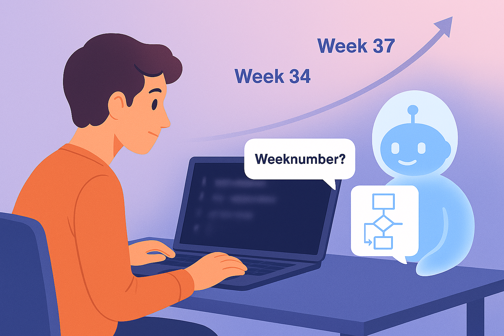

This blog post is available both in English and in Norwegian
I have previously blogged a bit about the course I am responsible for: BIOS1100 - Introduction to computational models for life sciences. The course has now changed its course code to BIOS1101 because the content has been somewhat changed. Beginner programming in Python is still taught to analyze and model biologically relevant problems. But now we have also included a simple introduction to classes and objects in Python.1
But, this blog post is about something else. As with all teaching, we are noticing the effect of the availability of Artificial Intelligence (AI) as chatbots (e.g. ChatGPT from OpenAI). All the tasks we have in BIOS1101 can be solved nicely with these tools. And students use them too! During the exam, students do not have access to AI, since this is conducted in a way that excludes access to the internet.
However, this is not how I would like to do the exam. I would much rather have an exam format where the use of AI as a supporting tool is part of the assessment. I am working on this, but that’s a topic for another post. For now, we’re at the point where the availability of AI and chatbots can lead to unfortunate use in BIOS1101.
The problem: unfortunate use of artificial intelligence
When we asked the students in the final evaluation of the course in 2024 about their use of ChatGPT, many answered that they had done so. However, they reported that the code they get back from the chatbot is more advanced than what they were taught. What is taught is deliberately very elementary Python code. For example, we teach the use of lists and loops, but not so-called ‘list-comprehension’. This is a way of working with lists and loops with a single line of code that does many things at the same time, but which we use several lines of code for in the course. Large Language Models (LLMs) are trained on publicly available (Python) code, and many developers use these more efficient ways of coding. As a result, students using regular chatbots are often given advanced answers that do little to help them in their learning.
The plan: a custom chatbot
For the teaching in 2025, we wanted to do something about this situation. We wanted to offer a customized version of GPT UiO, a service from the university that allows employees and students to use large language models (chatbots) within the requirements set for privacy. This customized chatbot we wanted to develop would act as a learning assistant, limiting the answers to what was in the course syllabus. In addition, we wanted the answers to be customized to what had been taught up to and including the week the students used the bot. During the course, it would adapt to the increasing complexity of coding knowledge taught. It would therefore ‘grow’ with the students and provide answers tailored to their level at all times.
To illustrate this: we teach the print() command to print things early in the course, but only after a few weeks do we add the use of so-called f-strings. F-strings are a widely used way of combining text and variables when printing them together.
We applied for, and received funding to hire two bachelor students for this project. The solution chosen was to use the ability of GPT UiO to add instructions, which tell the chatbot how to behave. In the user interface, you can save different instructions, and choose the one you need when starting a conversation. Important for the project was that it was also possible to share an instruction by getting a link for it. Other GPT UiO users could click on the link to add the shared instruction to their instance and use it there. We shared the final instruction with the students via the learning platform (LMS).
After testing several variations of possible instructions, an instruction was developed that was built on an existing instruction for AI as a learning assistant, developed by KURT – Centre for Teaching and Learning in Science at the university. It ensures that the chatbot does not give direct answers, but uses the Socratic approach where it asks questions first, before guiding the student to find the answer themselves.
On top of that, the context (a beginner programming course for biologists) was added, and a summary of the syllabus for each week was provided. The chatbot was instructed to first ask for the weeknumber before initiating the dialogue, and to limit the code complexity of the response to what had been taught so far.
Sentences such as “DO NOT use f-strings before week 37” were added.
The result: a successful experiment
At the end of the course, we asked students for feedback on their experiences with this chatbot. Half of the students (63 out of 120) responded.
The students said that the assistant was used for various things:
- Help with problem solving (understanding the problem text, hints on how to proceed).
- Interpret error messages.
- Explanation of difficult concepts.
- Help with exam preparation.
- Generate extra practice questions to test your own knowledge.
Most were positive about how the chatbot worked, some were a little more critical. It mostly stuck to the syllabus, so this approach worked as intended. The chatbot rarely responded directly and guided students step by step, and students found it helpful. Some expressed frustration that it was so difficult to get a direct answer when you were just looking for it. It was positive that it was always available and that it was based on the syllabus. Some complained that the answers were a bit long.
I was surprised that the approach where the chatbot would first ask for the weeknumber, and deal with the syllabus only up to that week would work so efficiently. I was already aware, and impressed, by how well LLMs work with good instructions, but even this I did not expect to work so well. I thought we needed to adapt the instruction week by week by adding more of the syllabus each time. Unfortunately, we have not attempted to measure the learning effect of the use of the assistant.
The instruction had relatively little information about Python programming, only the specific commands that were in the syllabus. Since LLMs are trained on so much programming knowledge, it worked anyway. I suspect that for other topics it will be necessary to add more syllabus, for example by making the textbook part of the instruction. This possibility has now become available for GPT UiO as well, something we will explore for the next time the course is held.
Concluding thoughts
All in all, we think this tailor-made chatbot has worked very well. We offered the students a tool that led to the sensible use of AI: to support their learning. And we will further develop this tool in the future. However, the wording ‘we offered’ is important here: it was up to the students to use the chatbot, rather than asking regular ChatGPT (or other models) for a solution.
This is something I see as an important aspect of AI in education: we should focus even more on teaching students to learn, on the metacognitive aspect. This is not really new, and we have been discussing this for years, but generative AI brings this need to the forefront even more.
Jeg har tidligere blogget en del om kurset jeg har ansvar for BIOS1100 - Innføring i beregningsmodeller for biovitenskap. Kurset har nå endret kurskoden til BIOS1101 fordi innholdet har blitt noe endret. Det undervises fortsatt begynnerprogrammering i Python for å analysere og modellere biologiske relevante problemstillinger. Men nå har vi også tatt inn en enkel introduksjon til klasser og objekter i Python.2
Men, denne blogposten handler om noe annet. Som med all undervisning merker vi effekten av tilgjengelighet av Kunstig Intelligens (KI) som chatboter (f. eks. ChatGPT fra OpenAI). Alle oppgavene vi har i BIOS1101 kan løses fint med disse verktøyene. Og studenter bruker dem også! På eksamen har studentene ikke tilgang til KI, siden denne gjennomføres på en måte som utelukker tilgang til internett (som skoleeksamen).
Egentlig ønsker jeg det ikke. Egentlig ønsker jeg en eksamensform der bruk av KI som støtte er en del av vurderingen. Dette jobber jeg med, men det blir stoff til en annen post. Foreløpig er vi der at tilgjengelighet av KI og chatboter kan føre til uheldig bruk i BIOS1101.
Problemet: uheldig bruk av kunstig intelligens
Da vi i 2024 spurte studentene i sluttevalueringen av kurset om bruk av ChatGPT svarte mange at de hadde gjort det. Men de rapporterte at kode de får tilbake fra chatboten er som er mer avansert enn det de fikk undervisning i. Det som undervises er bevisst veldig elementær Python kode. For eksempel underviser vi bruk av liste og løkker, men ikke såkalt ‘list-comprehension’. Detter er en måte å jobbe med lister og løkker med én enkel linje med kode som gjør mange ting samtidig, men som vi bruker flere linjer kode på i kurset.
Store språkmodeller (LLM-er) er trent på offentlig tilgjengelig (Python) kode, og mange utviklere bruker disse mer effektive måter å kode på. Derfor får studentene som bruker chatbots ofte avanserte svar som hjelper dem lite i sin læring.
Planen: en skreddersydd chatbot
For undervisning i 2025 ønsket vi å gjøre noe med denne situasjonen. Vi ønsket å tilby en tilpasset variant av GPT UiO, en tjeneste fra universitetet som lar ansatte og studenter bruke store språkmodeller (chatboter) innenfor kravene som settes til personvern. Denne tilpassede chatboten vi ville utvikle skulle oppføre seg som læringsassistent, og begrenser svarene til det som er pensum i kurset. I tillegg ønsket vi at svarene skulle tilpasses til det som hadde vært undervist frem til og med den uken studentene brukte boten. Utover kurset skulle den tilpasse seg den økende kompleksiteten i kodekunnskapen. Den skulle altså ‘vokse’ med studentene og gi svar tilpasset sitt nivå til enhver tid.
For å illustrere dette: vi underviser print() kommandoet til å skrive ut ting tidlig i kurset, men først etter en del uker legger vi til bruk av såkalte f-strenger. F-strenger er en mye brukt måte å kombinere tekst og variabler på når man skal skrive dem ut sammen.
Vi søkte om, og fikk midler til å ansette to bachelorstudenter til dette prosjektet. Løsningen var å bruke muligheten GPT UiO har til å legge til instruksjoner, som forteller chatboten hvordan den skal oppføre seg. I brukergrensesnittet kan man lagre forskjellige instruksjoner, og velge den du trenger når du skal starte en samtale. Viktig for prosjektet var at det også var mulig å dele instruksjonen ved at man kunne få en lenke. Andre GPT UiO brukere kunne klikke på lenken for å legge til den delte instruksjonen i sin instans og ta den i bruk der. Vi delte den endelige instruksjonen med studentene via læringsplattformen (LMSen).
Etter testing av flere varianter av mulige instruksjoner ble det utviklet en instruksjon som var bygget på en eksisterende instruks for AI som læringsassistent, utviklet av KURT – Kompetansesenter for undervisning i realfag og teknologi ved universitetet. Den sørger for at chatboten ikke gir direkte svar, men bruker den sokratiske tilnærmingen der den stiller spørsmål først, før den guider studenten til å selv finne svaret.
På toppen av den ble det lagt til konteksten (et begynner programmeringskurs for biologer), og en oppsummering av pensum for hver uke. Chatboten ble instruert om først å be om ukenummer før den satte i gang dialogen, og å begrense kodekomplesiteten i svaret til det som hadde vært undervist hittil.
Det ble lagt inn setninger som “IKKE bruk f-strenger før uke 37”.
Resultatet: et vellykket eksperiment
På slutten av kurset ba vi studentene om tilbakemelding om sine erfaringer med denne chatboten. Halvparten av studentene (63 av 120) svarte.
Studentene fortalte at assistenten ble brukt til forskjellige ting:
- Hjelp med oppgaveløsing (forståelse av oppgaveteksten, hint til fremgangsmåte).
- Tolke feilmeldinger.
- Forklaring av vanskelige konsepter.
- Hjelp med eksamensforberedelse.
- Generere ekstra øvingsoppgaver for å teste egen kunnskap.
De fleste var positive om hvordan chatboten fungerte, noen var litt mer kritisk. Den holdt seg stort sett til pensum, så denne tilnærmingen fungerte som ønsket. Chatboten svarte sjeldent direkte og guidet studentene trinn for trinn, og studentene synes det var nyttig. Noen uttrykte frustrasjon at det var så vanskelig å få et direkte svar når man bare var ute etter det. Det var positivt at den var alltid tilgjengelig og at den tok utgangspunkt i pensum. Noen klaget på at svarene var litt lange.
Jeg var selv overrasket at tilnærmingen der chatboten skulle først spørre om ukenummer, og forholde seg til pensum bare opp til denne uken skulle bli en så stor suksess. Jeg var klar over, og imponert, fra før av over hvor bra LLMer fungerer med gode instruksjoner, men selv dette hadde jeg ikke forventet skulle fungere så bra. Jeg trodde vi trengte å tilpasse instruksen uke for uke ved å legge til pensum hver gang. Dessverre har vi ikke gjort tiltak for å måle læringseffekten av bruken av assistenten.
Instruksjonen hadde forholdsvis lite informasjon om Python programmering, bare de spesifikke kommandoene som var pensum. Siden LLM-er er trent på så mye programmeringskunnskap, fungerte det allikevel. Jeg mistenker at det for andre temaer blir nødvendig å legge til mer pensum, for eksempel ved å la læreboken bli en del av instruksjonen. Denne muligheten har nå blitt tilgjengelig for GPT UiO også, noe vi skal utforske til neste gang kurset holdes.
Konklusjonen
Alt i alt synes vi at denne skreddersydde chatboten har fungert veldig bra. Vi fikk laget et tilbudt til studentene som førte til fornuftig bruk av KI: til å støtte deres læring. Og vi skal videreutvikle dette tilbudet framover. Men, ordet ‘tilbudet’ er vesentlig her: det var opp til studentene å ta chatboten i bruk, heller enn å be den vanlige ChatGPT (eller andre modeller) om fasit.
Dette er noe jeg ser som et viktig aspekt med KI i utdanning: vi bør fokusere enda mer på å lære studenter å lære, på det metakognitive aspektet. Dette er egentlig ikke noe nytt, og vi har diskutert dette i alle år, men generativ KI tvinger fram dette enda mer.
Comments on this post are welcome on LinkedIn.
Footnotes
Apart from the image and the English translation, no generative artificial intelligence tools were used directly to create this blog post. GPT-5.1 Thinking (via GPT UiO) was asked to give feedback on an earlier draft, which led to some improvements in the text.↩︎
Bortsett fra bildet og oversettelsen til engelsk, ble ingen generative verktøy for kunstig intelligens brukt direkte for å lage dette blogginnlegget. GPT-5.1 Thinking (via GPT UiO) ble bedt å gi tilbakemelding på et tidligere utkast, som førte til noen forbedringer i teksten.↩︎